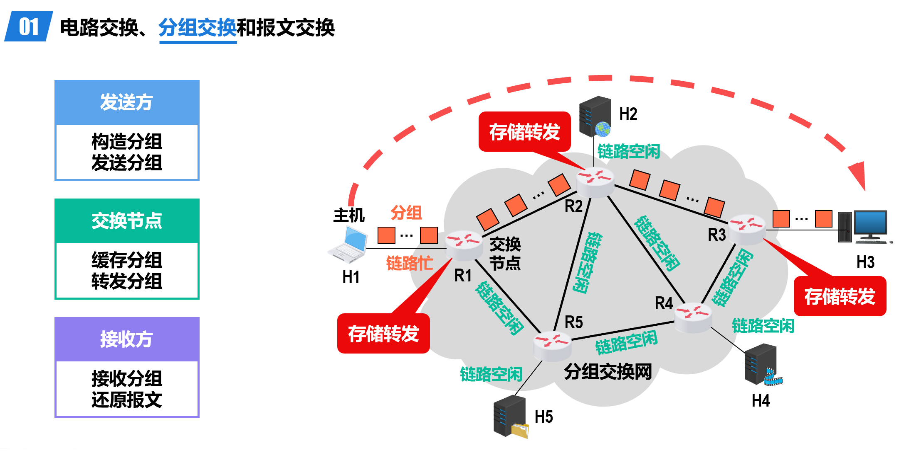
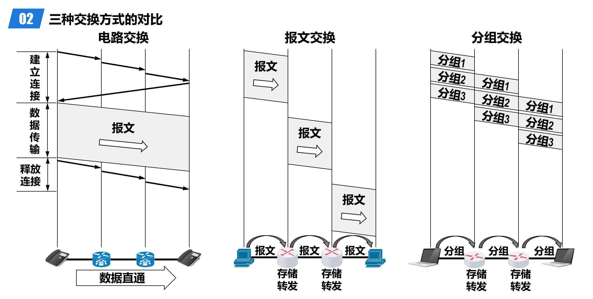
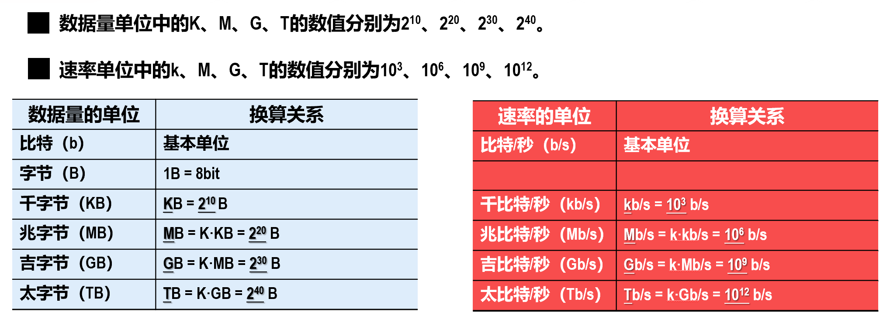
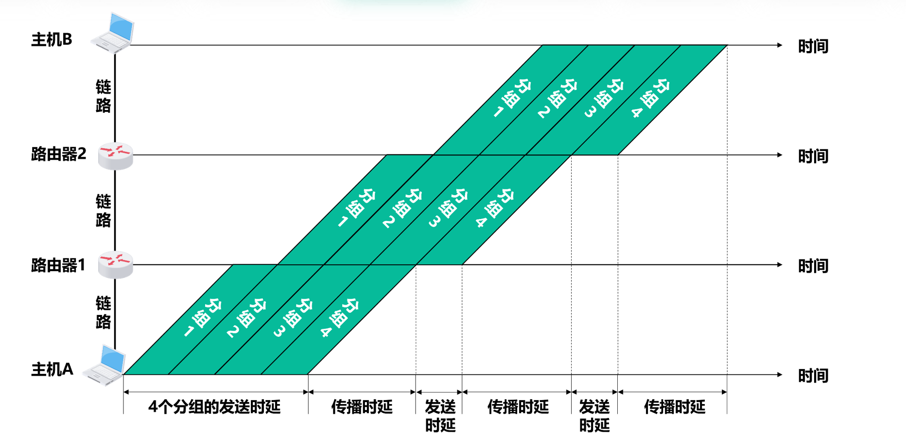
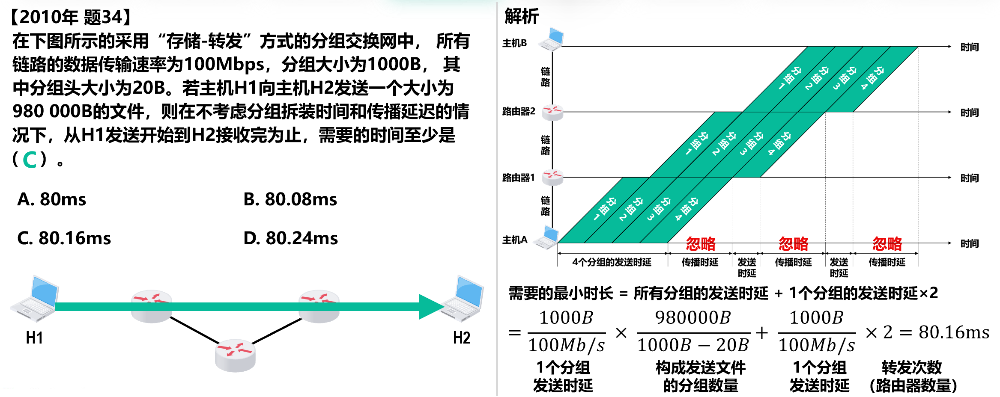
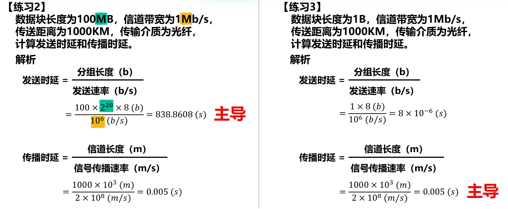
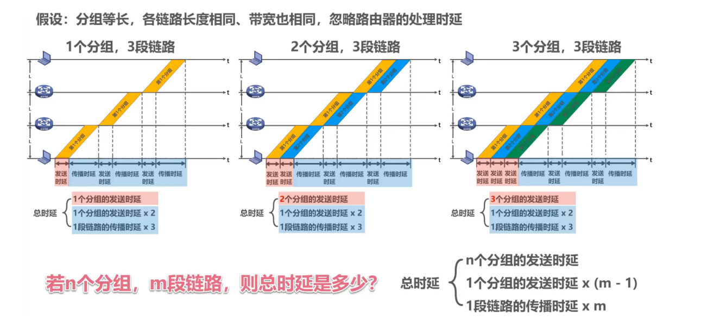
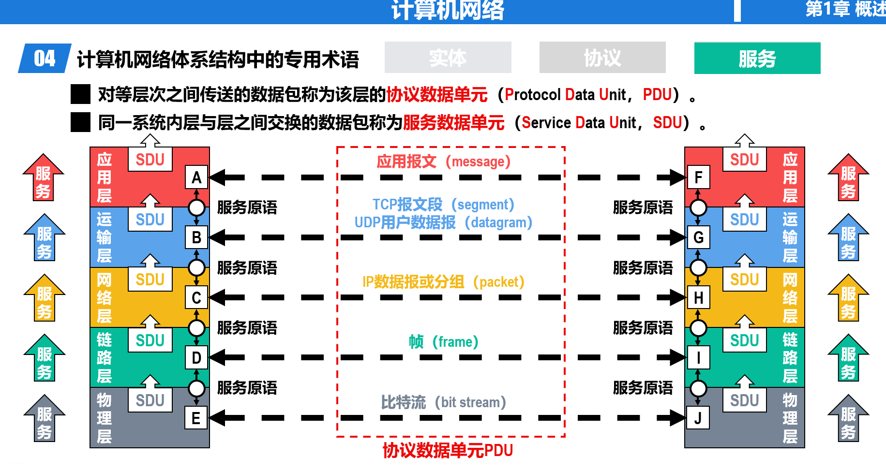

计算机网络¶
约 2655 个字 8 张图片 预计阅读时间 8 分钟
任课教师：许海涛
参考：《深入浅出计算机网络》，https://zjucomp.net/
课程作业
绪论¶
因特网¶
网络vs.互联网vs.因特网
- 网络：节点（Node）和节点间通过有线/无线链路（Link）连接而成的系统
- 互联网：由多个网络通过路由器互联而成的网络（网络的网络）
- 因特网（Internet）：全球最大的互联网
因特网的三个发展阶段：
- ARPANET 向互连网发展
- 三级结构因特网
- 多层次 ISP 结构的因特网
- ISP（Internet Service Provider）：因特网服务提供商，例如中国电信/联通/移动
因特网的标准化工作是面向公众的，其任何一个建议标准在成为因特网标准之前都以 RFC（Request for Comments）的技术文档的形式在因特网上发表，即因特网草案->建议标准->因特网标准
交换模型（Switching Model）¶
- 电路交换：用户设备通过用户线连到各自的电话交换机，交换机间通过中继线互联
- 分配资源——占用资源——归还资源
- 突发式数据传送，传送效率很低——传送时间占很小一部分
- 分组交换：通过分组交换网中的交换节点传送分组后的数据（报文，Message）
- 
- 将较长的报文拆分成若干个较短的等长数据段，在每个数据段前加上一些必要的控制信息（称为 Header），例如源地址和目标地址等，这样就形成了一个个分组（Packet）
- pros：没有建立连接和释放连接的过程；分组传输过程中逐段占用通信链路，有较高的通信线路利用率；交换节点可以为每一个分组独立选择转发路由，使得网络有很好的生存性
- cons：分组首部带来了额外的传输开销；交换节点存储转发分组会造成一定的时延；无法确保通信时端到端通信资源全部可用，在通信量较大时可能造成网络拥塞；分组可能会出现失序和丢失等问题。
- 注意，分组的首部是额外添加的，并不包含原数据的内容，即分组 = 首部 + 数据
- 报文交换：
- 报文被整个地发送，而不是拆分成若干个分组进行发送。
- 交换节点将报文整体接收完成后才能查找转发表，将整个报文转发到下一个节点。
- 因此，报文交换比分组交换带来的转发时延要长很多，需要交换节点具有的缓存空间也大很多。

计算机网络简介¶
- 分类
- 按照交换方式分类：
- 电路交换
- 分组交换
- 报文交换
- 使用者分类
- 公用网（因特网）
- 专用网（军队、铁路等）
- 传输介质分类
- 有线网
- 无线网
- 覆盖范围分类
- 广域网（WAN）：几十-几千公里
- 城域网（MAN）：五公里-五十公里
- 局域网（LAN）：1km左右
- 个域网（PAN）：10m左右
- 拓扑结构分类
- 总线型
- 星型
- 环型
- 网状型
- 按照交换方式分类：
CN 的性能指标
速率
即每秒交换多少个 bit，亦称为数据率（data rate）或比特率（bit rate），单位是 bps（bits per second, bit/s），也常用 kbps、Mbps、Gbps 等，每两个单位间隔 1000 倍。
- 注意，数据量的单位常用字节（Byte, B），1B = 8bits，且此处 KB, MB, GB 等中的 K, M, G 是 2^10 的倍数，与速率的进制不同。
- 
例
- 有一个待发送的数据块，大小为100MB，网卡的发送速率为100Mbps，则网卡发送完该数据块需要多长时间？
- \(t = \frac{100MB}{100Mbps} = \frac{MB}{Mbps} =\)（不能直接约掉M！）\(\frac{2^{20} \times 8 bits}{10^6 bits/s} \approx 8.389s\)
带宽
用来表示网络的通信线路所能传送数据的能力，即在单位时间内从网络中的某一点到另一点所能通过的最高数据率。
- 数据传送速率 = min [主机接口速率，线路带宽，交换机或路由器的接口速率]
吞吐量
在单位时间内通过某个网络或接口的实际数据量；受网络带宽限制。
时延
数据从网络的一端传送到另一端所耗费的时间，也称为延迟或迟延。
- 发送时延 = 分组长度（bits）/ 发送速率（bps）（发送速率就是『带宽』中计算的数据传送速率）
- 传播时延 = 链路长度（m）/ 电磁波信号传播速度（m/s）
- 自由空间：3.0 × 108 m/s
- 铜线：2.3 × 108 m/s
- 光纤：2.0 × 108 m/s
- 排队时延和处理时延不方便计算
- 有点流水线的感觉：
例
- 
- 注意计算分组数量时，分组长度要减去首部长度
- 
- 由此可以看出，分组长度大时，发送时延占主导；否则传播时延占主导

时延带宽积
传播时延和带宽的乘积，可以形象地理解为某一时刻信道/链路中“充满”的比特数。
链路的时延带宽积也称为以比特为单位的链路长度
例
- 主机A和B之间采用光纤链路，链路长1km，链路带宽为1Gb/s，请计算该链路的时延带宽积。
- 时延带宽积 = 传播时延 × 带宽 = \(\frac{1000m}{2.0 \times 10^8 m/s} \times 1Gb/s = 5000 bits\)
往返时间
RTT（Round Trip Time），即一个分组从发送端发送，到发送端收到从接收端发来的相应确认分组所经历的时间
利用率
- 链路利用率：某条链路有百分之多少时间有数据通过
- 某链路利用率增大时，其引起的时延也会增大（根本是分组在交换节点的排队时延增大了）
- 网络利用率：所有链路利用率的加权平均
- \(D_0\): 网络空闲时的时延；\(D\): 网络当前时延；\(U\): 网络利用率。那么有 \(D = \frac{D_0}{1-U}\)
丢包率
一定的时间范围内，传输过程中丢失的分组数量与总分组数量的比值。
- Packet 丢失主要有以下两种原因：
- 分组在传输过程中出现误码，被传输路径中的节点交换机（例如路由器）或目的主机检测出误码而丢弃。
- 节点交换机根据丢弃策略主动丢弃分组。
计算机网络体系结构¶
- 常见的三种 CN Arch
- OSI 七层参考模型：物理层、数据链路层、网络层、传输层、会话层、表示层、应用层
- TCP/IP 四层参考模型：网络接口层、网际层、传输层、应用层；即物理层和数据链路层合并为网络接口层，会话层到应用层合并为新应用层
- 原理参考模型：由于网络接口层在教学意义上比较难以理解，把网络接口层重新拆分为数据链路层和物理层
分层的必要性¶
分层可将庞大复杂的问题转化为若干较小的局部问题，各层主要考虑的功能如下：
- 物理层：传输媒体（介质）的选择；物理接口选择；0/1 的表示
- 数据链路层：标识网络中各主机（主机编址，例如MAC地址）；从比特流中区分出地址和数据（数据封装格式）；协调各主机争用总线（媒体接入控制）；以太网交换机的实现（自学习和转发帧）；检测数据是否误码（差错检测）；出现传输差错如何处理（可靠传输和不可靠传输）
- 网络层：标识网络和网络中的各主机（网络和主机共同编址，例如IP地址）；路由器转发分组（路由选择协议、路由表和转发表）；
- 运输层：进程之间基于网络的通信（进程的标识，例如端口号）；出现传输差错如何处理（可靠传输和不可靠传输；
- 应用层：通过应用进程间的交互来完成特定的网络应用；进行会话管理和数据表示；
Terminology
- 实体（Entity）：任何可发送或接收信息的硬件或软件进程
- 协议（Protocol）：对等实体之间通信的规则，包含如下三要素
- 语法（Syntax）：规定数据包的结构，确保信息能够被正确解析
- 语义（Semantics）：规定数据包中的每个字段代表什么意义，以及接收设备收到后该如何处理
- 同步（Synchronization）：规定发送方和接收方在通信时的时序匹配关系
- 服务（Service）：对等实体通过协议进行通信，为上一层提供服务；实体看得见下层提供的服务，但并不知道实现该服务的具体协议
- 相邻两层实体交换信息的接口称为服务访问点（ASP，Access Service Point），用于区分不同的服务类型
- 上层要使用下层所提供的服务，必须通过与下层交换一些命令，这些命令称为服务原语。
- PDU & SDU
- 
物理层¶
物理层接口特性
- 机械特性：规定连接器的形状、尺寸和引脚排列等
- 电气特性：规定信号的电压、电流、频率、距离限制等
- 功能特性：规定接口电缆的各条信号线的作用
- 规程特性：规定在信号线上传输比特流的一组操作过程，包括各信号间的时序关系
传输媒体¶
也称传输媒介，是网络设备间的物理通路，处于物理层之下，不包含在 CN Arch 中
- 导向型传输媒体（固体媒体）
- 同轴电缆
- 基带、宽带
- 双绞线
- 绞合：减少相邻导线间的电磁干扰，抵御部分来自外界的电磁干扰
- 光纤
- 使用发光二极管或半导体激光器将电脉冲转为光脉冲，通过光纤到达接收端后，通过光电二极管或激光检波器输出电脉冲
- 多模光纤（全反射 all along）（发光二极管 to 光电二极管）、单模光纤（直线传播）（半导体激光器 to 激光检波器）
- pros：通信容量非常大，抗电磁干扰能力强，传输损耗小，中继距离长，体积小重量轻
- cons：切割光纤需要较贵的专用设备；光纤接口较昂贵
- 同轴电缆
- 非导向型传输媒体（无线媒体）